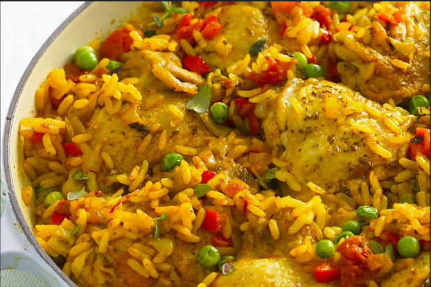

Deliciosas recetas con arroz para todos los gustos
Explora una selección de recetas con arroz, desde el clásico arroz con pollo hasta platos internacionales.
Arroz con Pollo
Un plato tradicional y colorido, lleno de sabor y fácil de preparar para cualquier ocasión.
- Tiempo de preparación: 1 hora y 20 minutos
- Ingredientes: Arroz, pollo, pimientos, cebolla, ajo, tomate, caldo de pollo, guisantes, especias, sal, pimienta, aceite
Preparación:
1. En una sartén grande, calienta un poco de aceite y dora las piezas de pollo. Retíralas y resérvalas.
2. En la misma sartén, sofríe la cebolla, el ajo y los pimientos hasta que estén tiernos. Agrega el tomate picado y cocina unos minutos.
3. Incorpora el arroz y remueve bien, permitiendo que se mezcle con el sofrito durante 2 minutos.
4. Añade el caldo de pollo y las piezas de pollo. Cocina a fuego medio hasta que el arroz esté casi seco.
5. Agrega los guisantes y tapa. Cocina a fuego bajo hasta que el arroz esté tierno. Sirve caliente.
Risotto de Champiñones

Una receta cremosa y elegante de la cocina italiana, ideal para una comida especial.
- Tiempo de preparación: 45 minutos
- Ingredientes: Arroz arborio, champiñones, caldo de pollo o vegetales, vino blanco, cebolla, ajo, queso parmesano, mantequilla, aceite, sal, pimienta
Preparación:
1. En una sartén, calienta un poco de aceite y sofríe la cebolla y el ajo hasta que estén tiernos.
2. Añade los champiñones en rodajas y cocina hasta que suelten su jugo. Retíralos y resérvalos.
3. Agrega el arroz y remueve bien, dejando que absorba el aceite. Vierte el vino blanco y cocina hasta que se evapore.
4. Añade el caldo caliente, un cucharón a la vez, removiendo constantemente hasta que el arroz esté cremoso y tierno.
5. Incorpora los champiñones, mantequilla y queso parmesano. Sazona y sirve inmediatamente.
Paella de Mariscos

Una receta española clásica, perfecta para una comida familiar o con amigos.
- Tiempo de preparación: 1 hora y 30 minutos
- Ingredientes: Arroz, mariscos variados (calamares, mejillones, camarones), pimientos, tomate, ajo, caldo de pescado, azafrán, aceite de oliva, sal, pimienta
Preparación:
1. En una paellera, calienta el aceite de oliva y sofríe el ajo, los pimientos y el tomate rallado hasta que se forme un sofrito.
2. Añade los mariscos y cocina brevemente hasta que empiecen a cambiar de color.
3. Agrega el arroz y remueve bien para que se impregne del sofrito. Añade el caldo de pescado caliente con el azafrán.
4. Cocina a fuego medio hasta que el arroz absorba el caldo y esté al dente.
5. Decora con más mariscos y tapa unos minutos antes de servir.